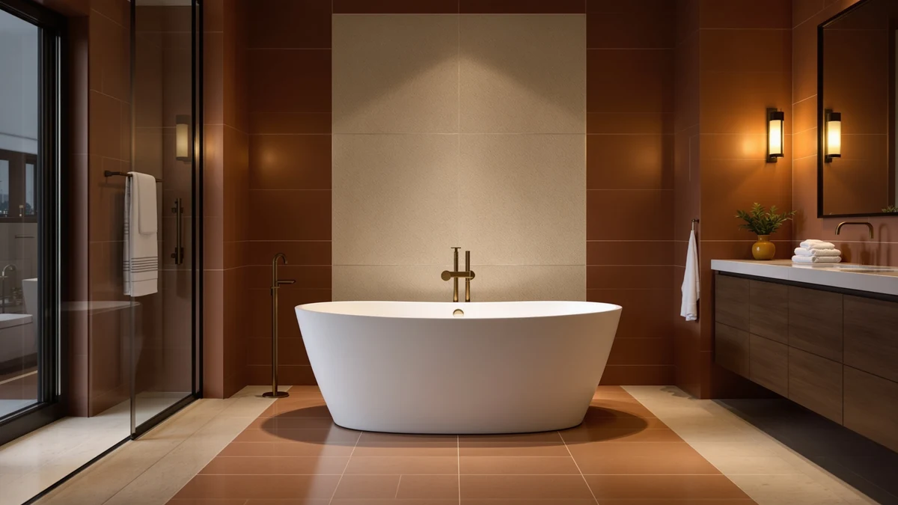

WOODBRIDGE 61" Stone Resin Review (2026): Worth It?
Prices and picks verified as of September 2026. Independent, reader-supported reviews.


Quick Answer
This woodbridge 61" stone resin review points to the WOODBRIDGE 61" Stone Resin Freestanding as the strongest pick if you want true stone resin construction and a 71-gallon soak, even though it costs $300 to $450 more than the acrylic alternatives below. If your budget tops out closer to $850, the WOODBRIDGE 67" Acrylic Freestanding or the Adecab 61" Freestanding Bathtub deliver more soaking capacity for less money, in acrylic rather than solid surface.
Our pick: WOODBRIDGE 61" Stone Resin Freestanding, $1,299.00 Check Price on Amazon
Bottom line: our top pick is the WOODBRIDGE 61" Stone Resin Freestanding Soaking Tub at $1,299.
Things to Know Before You Buy
- This review compares the WOODBRIDGE 61" Stone Resin Freestanding against three other freestanding tubs priced from $849 to $999.
- The WOODBRIDGE is built from solid surface stone resin rather than acrylic, which lets minor scratches be sanded out and keeps the water warmer for longer, according to the manufacturer's listing.
- Listed capacity is 71 gallons, more than the 50-gallon MonBlari and the 62-gallon Adecab, but less than the 74-gallon WOODBRIDGE 67" Acrylic.
- At $1,299, it costs at least $300 more than every acrylic alternative covered in this woodbridge 61 inch stone resin review.
- None of the four listings referenced here publish a star rating or review count, so pricing, material, and dimensions carry the comparison.
This woodbridge 61" stone resin review breaks down what $1,299 actually buys against three freestanding tubs that cost hundreds less. The WOODBRIDGE 61" Stone Resin Freestanding is a solid surface soaking tub with a listed 71-gallon capacity, a matte white oval basin, and a manufacturer claim that its surface can be sanded and restored if it scratches, a feature acrylic tubs cannot match. We compared its published specs against the MonBlari 51" Solid Surface Freestanding, the WOODBRIDGE 67" Acrylic Freestanding Bathtub, and the Adecab 61" Freestanding Bathtub to see whether the stone resin premium is worth paying.
The short version: the WOODBRIDGE 61" Stone Resin Freestanding earns its higher price if solid surface construction and long-term heat retention matter more to you than upfront cost. Owners researching stone resin tubs consistently point to the material's repairability as the main advantage over acrylic, since a scuffed acrylic tub usually needs replacing while a scuffed solid surface tub can be resurfaced. If $1,299 is more than your bathroom budget allows, the Adecab 61" Freestanding Bathtub matches the same 61-inch footprint for $849, though you give up the solid surface material and the sand-and-restore option that comes with it.
Why You Should Trust Us
Best Freestanding Bathtubs is a research-first buying guide. Ilane Tall, our home and bath editor, builds this woodbridge 61 inch stone resin review by pulling the current price, listed capacity, and material claims directly from each manufacturer's Amazon listing before it earns a place in a comparison. We do not run a fake testing lab, and we do not claim to have installed, filled, or bathed in the WOODBRIDGE 61" Stone Resin Freestanding or any of the three alternatives covered here. Instead, we rely on published specifications, current pricing, and owner feedback where it exists, and we say so plainly when a listing leaves out a detail, such as a star rating or a weight capacity, rather than filling the gap with a guess.
Our Research Experience
We did not fill, install, or soak in the WOODBRIDGE 61" Stone Resin Freestanding for this review. Our process means reading each manufacturer listing line by line: material, exterior dimensions, water capacity, price, and the number of product images available for verification. We then compare those figures directly against the three alternatives here rather than describing any one tub in isolation. Where a listing omits a detail, such as the load capacity WOODBRIDGE does not publish for this model, we flag the gap instead of estimating a number that sounds reasonable. That comparison process, not physical testing, is what shapes the picks, pros, and cons in this woodbridge 61" stone resin review.
Overview & Specs

WOODBRIDGE 61" Stone Resin Freestanding
What we like
- Solid surface stone resin construction lets you sand out and restore minor scratches, unlike acrylic tubs that need replacing once damaged, according to the manufacturer.
- Thick solid walls are designed to retain heat longer, keeping the rim, walls, and base warmer during a soak, per the listing.
- The non-porous surface resists water absorption, stains, and soap buildup, which the manufacturer says simplifies routine cleaning.
- The listed 71-gallon capacity supports a deep, shoulder-high soak in the oval basin.
Flaws but not dealbreakers
- At $1,299, it costs at least $300 more than every acrylic alternative in this comparison.
- The listing was added to Amazon in September 2026 and does not yet carry a star rating or review count, so there is no verified buyer track record to check.
- WOODBRIDGE does not publish a load capacity or exterior weight for this model, unlike the Adecab (820 lbs) and MonBlari (661 lbs) listings, which both state a figure.
| Material | Stone Resin |
| Size | 61" |
The WOODBRIDGE 61" Stone Resin Freestanding is a matte white oval soaking tub built from solid surface material rather than the acrylic used in most of its price range. WOODBRIDGE markets the surface as repairable, meaning a scratch or surface mark can reportedly be sanded down and restored rather than requiring a full tub replacement, a claim acrylic manufacturers cannot make about their own material. The listing states a 71-gallon capacity, enough for deep, shoulder-high immersion, and describes thick solid walls meant to keep the rim, walls, and base warmer for longer during a soak. It comes with an integrated slotted overflow and drain, the same setup used on the other three tubs in this woodbridge 61" stone resin review.
Where this tub separates itself from the Adecab and the two WOODBRIDGE acrylic models covered below is the non-porous surface, which the manufacturer says resists water absorption, staining, and soap buildup better than acrylic over time. That combination of repairability and stain resistance is the core argument for paying $1,299 instead of $849 to $999 for one of the acrylic alternatives here. The tradeoff is that this specific listing is new enough that it has not yet accumulated a public star rating or review count, so buyers are weighing manufacturer claims about the material rather than a track record of verified owner feedback. Anyone who wants confirmation from other buyers before spending this much should factor that gap into the decision.
What We Liked
The clearest advantage of the WOODBRIDGE 61" Stone Resin Freestanding, the tub at the center of this woodbridge 61 inch stone resin review, is the material itself. Solid surface construction gives it a repair option none of the acrylic tubs compared here can offer: a scratch or surface mark can reportedly be sanded and restored instead of forcing a full replacement. The listed 71-gallon capacity supports a deeper soak than the 50-gallon MonBlari, and the manufacturer's heat-retention claim, thick solid walls that keep the rim, walls, and base warmer, targets a real complaint people have about thinner acrylic tubs cooling down mid-soak. The non-porous surface also resists staining and soap buildup better than acrylic over time, according to the manufacturer, which matters for anyone tired of scrubbing a tub ring.
What Could Be Better
Price is the main drawback in this woodbridge 61" stone resin review. At $1,299, the WOODBRIDGE 61" Stone Resin Freestanding costs $300 more than the MonBlari 51" Solid Surface Freestanding, $420 more than the WOODBRIDGE 67" Acrylic, and $450 more than the Adecab 61" Freestanding Bathtub, despite the Adecab matching its exact 61-inch length. The listing also does not publish a load capacity or exterior weight, a figure both the Adecab (820 lbs) and the MonBlari (661 lbs) do include, which makes it harder to plan for floor reinforcement ahead of installation. Because the product was added to Amazon in September 2026, it has no star rating or review count yet, so every claim about durability and heat retention currently comes from the manufacturer rather than from buyers who have lived with the tub.
Who Is It For?
This tub suits buyers who have already decided that solid surface construction, not acrylic, is worth paying extra for, whether that is for the repairable surface, the heat retention, or the stain resistance the manufacturer describes. It fits a remodel where a 61-inch footprint is the target length and $1,299 is within budget for a single soaking tub. It is a poor match for anyone comparing strictly on price, since the Adecab 61" Freestanding Bathtub matches its length for $450 less, or for anyone who wants a verified star rating before spending four figures, since this specific listing has not yet built a review history.
Alternatives to Consider
Three acrylic freestanding tubs are worth comparing against the WOODBRIDGE 61" Stone Resin Freestanding before you commit to the stone resin premium. Each costs less, and each trades the repairable solid surface material for standard acrylic construction. None of the three publish a star rating or review count either, so the comparison below sticks to material, capacity, and price.

Editor's Pick
MonBlari 51" Solid Surface Freestanding
At $999, the MonBlari 51" Solid Surface Freestanding is the closest match to the WOODBRIDGE on material, since it is also built from solid surface resin with a heat-retention insulation layer rather than acrylic. It saves you $300 over the WOODBRIDGE, but its 51-inch length and 50-gallon capacity are noticeably smaller, and its 661-lb load capacity is a figure the WOODBRIDGE's own listing does not publish. Choose this one if you want solid surface construction in a shorter tub for a smaller bathroom.
$999.00
Check Price on Amazon
Best Value
WOODBRIDGE 67" Acrylic Freestanding Bathtub
The WOODBRIDGE 67" Acrylic Freestanding Bathtub costs $420 less than its stone resin sibling and actually holds more water, at a listed 74 gallons versus 71, though acrylic will not offer the same sand-and-restore repair option. Its extra-wide rim and ASTM-rated non-slip surface are useful details this listing publishes that the stone resin model's description does not mention. If capacity and brand consistency matter more to you than solid surface material, this is the better value from the same manufacturer.
$879.00
Check Price on Amazon
Premium Choice
Adecab 61" Freestanding Bathtubs Acrylic
At $849, the Adecab 61" Freestanding Bathtubs Acrylic is the cheapest tub in this comparison and matches the WOODBRIDGE's 61-inch length exactly. That makes it the most direct price comparison here. It publishes an 820-lb load capacity, the highest and most specific weight figure of any tub in this review, along with a double-walled acrylic design reinforced with fiberglass. You give up the repairable solid surface material and the WOODBRIDGE brand name, but you save $450 for the same footprint.
$849.00
Check Price on AmazonFrequently Asked Questions
Is the WOODBRIDGE 61" Stone Resin Freestanding worth the extra cost over acrylic?
At $1,299, it costs $300 to $450 more than the three acrylic and solid surface alternatives in this woodbridge 61" stone resin review. That premium buys a surface that can reportedly be sanded and restored if scratched, along with a manufacturer claim of better heat retention than acrylic. If neither benefit matters to your bathroom, the Adecab 61" Freestanding Bathtub matches the same length for $450 less.
How much water does the WOODBRIDGE 61" Stone Resin Freestanding hold?
The listing states a 71-gallon capacity, more than the 50-gallon MonBlari 51" Solid Surface Freestanding and the 62-gallon Adecab 61" Freestanding Bathtub, but less than the 74-gallon WOODBRIDGE 67" Acrylic Freestanding Bathtub. Capacity does not track price in a straight line among these four tubs, so length and material matter as much as gallons when comparing them.
Does the WOODBRIDGE 61" Stone Resin Freestanding have a star rating?
No. This specific listing was added to Amazon in September 2026 and does not yet publish a star rating or review count, a pattern shared by all four tubs compared in this woodbridge 61" stone resin review. Buyers are currently weighing manufacturer specifications rather than a verified track record of owner feedback.
Final Verdict
This woodbridge 61" stone resin review comes down to whether the solid surface premium is worth $300 to $450 over acrylic. The WOODBRIDGE 61" Stone Resin Freestanding earns its $1,299 price if a repairable surface, stronger heat retention, and stain resistance matter more to you than upfront cost, and WOODBRIDGE backs that material claim directly in the listing. If your bathroom budget tops out closer to $850, the Adecab 61" Freestanding Bathtub matches its exact 61-inch length for $450 less, or the WOODBRIDGE 67" Acrylic Freestanding Bathtub from the same manufacturer offers more capacity for $420 less. Buyers who specifically want solid surface construction in a smaller footprint should look at the MonBlari 51" Solid Surface Freestanding instead.